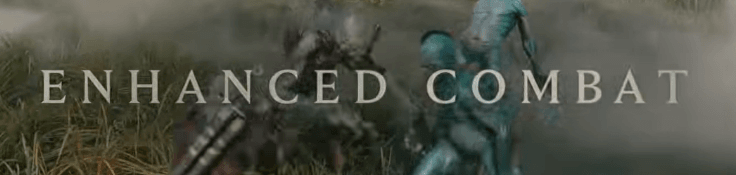
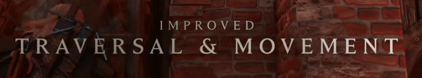
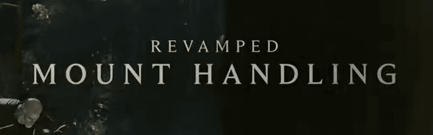
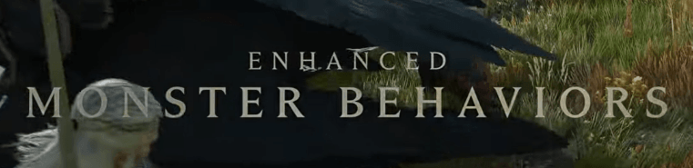
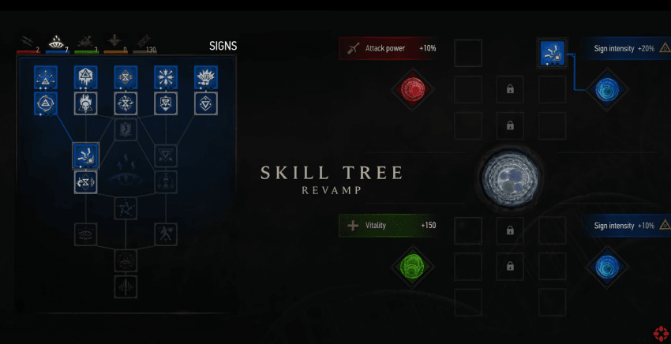
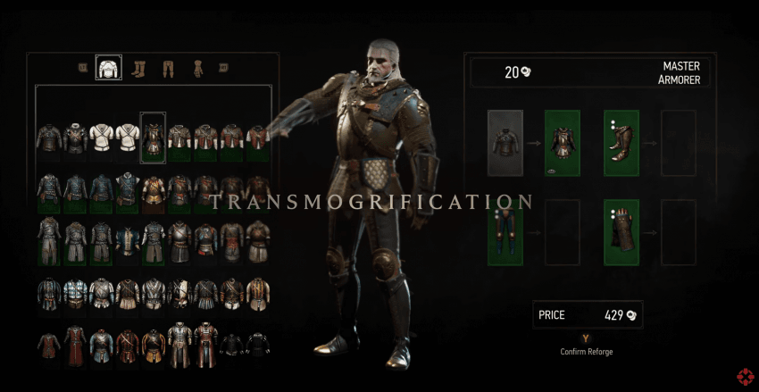
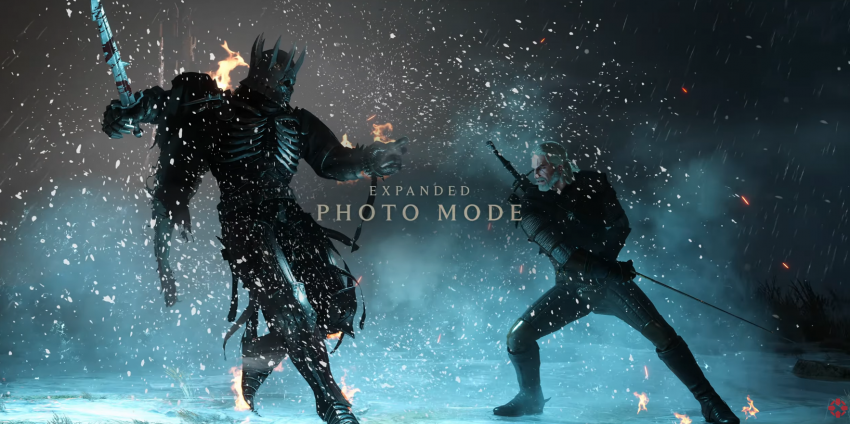
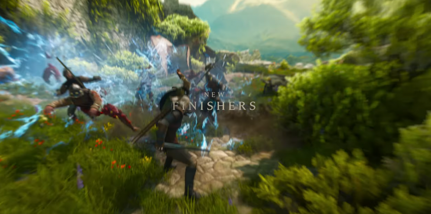
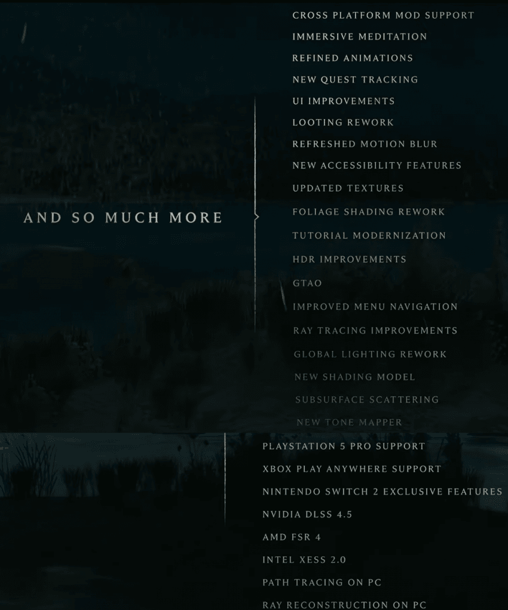

붕쯔붕쯔 전투향상

파쿠르, 사다리등 지형 이동개선

로취 핸들링 개편

몹 행동향상
새로운 공격이 생김

스킬트리 개편

형변 추가

포토모드 추가

새로운 피니쉬들
그 외

CROSS PLATFORM MOD SUPPORT: 크로스 플랫폼 모드 지원
IMMERSIVE MEDITATION: 몰입형 명상
REFINED ANIMATIONS: 정교해진 애니메이션
NEW QUEST TRACKING: 새로운 퀘스트 추적 시스템
UI IMPROVEMENTS: UI(유저 인터페이스) 개선
LOOTING REWORK: 전리품 루팅 시스템 개편
REFRESHED MOTION BLUR: 모션 블러 효과 개편
NEW ACCESSIBILITY FEATURES: 새로운 접근성 기능
UPDATED TEXTURES: 텍스처 업데이트
FOLIAGE SHADING REWORK: 식생(풀·나무) 셰이딩 개편
TUTORIAL MODERNIZATION: 튜토리얼 최신화
HDR IMPROVEMENTS: HDR 성능 개선
GTAO: GTAO(Ground Truth Ambient Occlusion, 입체감·음영 기술)
IMPROVED MENU NA-VIGATION: 메뉴 탐색 기능 개선
RAY TRACING IMPROVEMENTS: 레이 트레이싱 개선
GLOBAL LIGHTING REWORK: 전역 조명(Global Illumination) 시스템 개편
NEW SHADING MODEL: 새로운 셰이딩 모델
SUBSURFACE SCATTERING: 표면하 산란(피부·양초 등의 빛 투과 효과)
NEW TONE MAPPER: 새로운 톤 매퍼(색감·명암 표현 기술)
PLAYSTATION 5 PRO SUPPORT: 플레이스테이션 5 프로 지원
XBOX PLAY ANYWHERE SUPPORT: 엑스박스 플레이 애니웨어 지원
NINTENDO SWITCH 2 EXCLUSIVE FEATURES: 닌텐도 스위치 2 전용 기능
NVIDIA DLSS 4.5: 엔비디아 DLSS 4.5 지원
AMD FSR 4: AMD FSR 4 지원
INTEL XESS 2.0: 인텔 XeSS 2.0 지원
PATH TRACING ON PC: PC 버전 패스 트레이싱 지원
RAY RECONSTRUCTION ON PC: PC 버전 레이 재구성(Ray Reconstruction) 지원

어크 한창 하다가 위처3 재밌데서 했었는데 무릎까지도 안오는 턱도 못올라가는거보고 겜껐던 기억나네 ㅋㅋ 이것도 고쳐주는건가